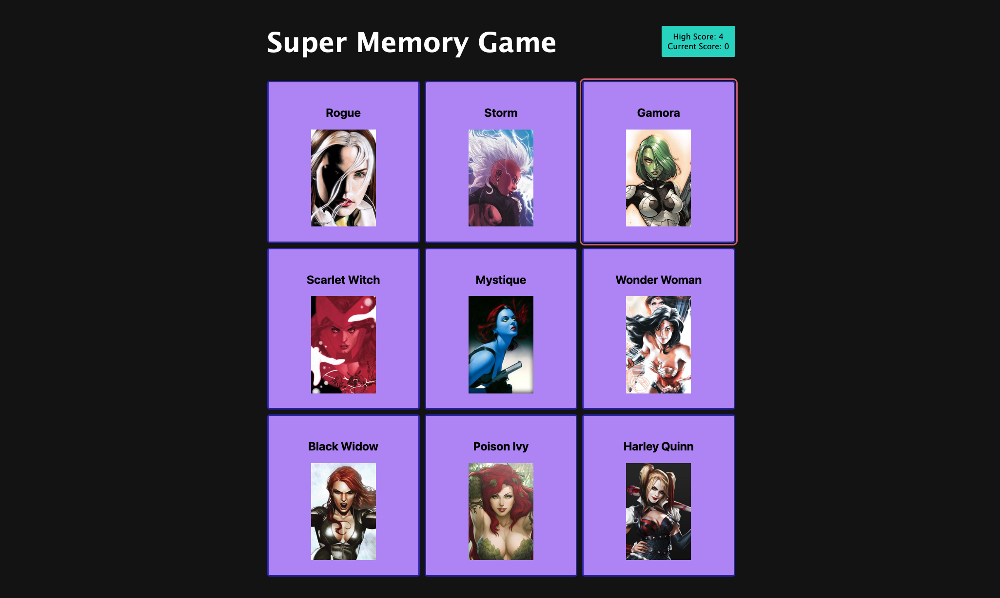

Memory Game

Project Summary
Memory card game designed from scratch in React and leveraging APIs to fetch data for the displayed cards.
Audience
This game can be played using mouse or keyboard as the input device, and is screen reader accessible.
Details
This is the first React project in The Odin Project. The intent was to become familiar with jsx as well as leverage state across multiple components and effects to fetch API data only once on load.
I appreciated the process of creating this game to better understand the directionality of state and how to smoothly store and access data throughout user interaction for a light and responsive app.
I used a simple dark mode theme with a plain background as the superhero images are quite colorful and visually busy. On mobile devices, it's most optimal to play the game in portrait mode, as the shape of the cards wants to naturally reflect the shape of the images.